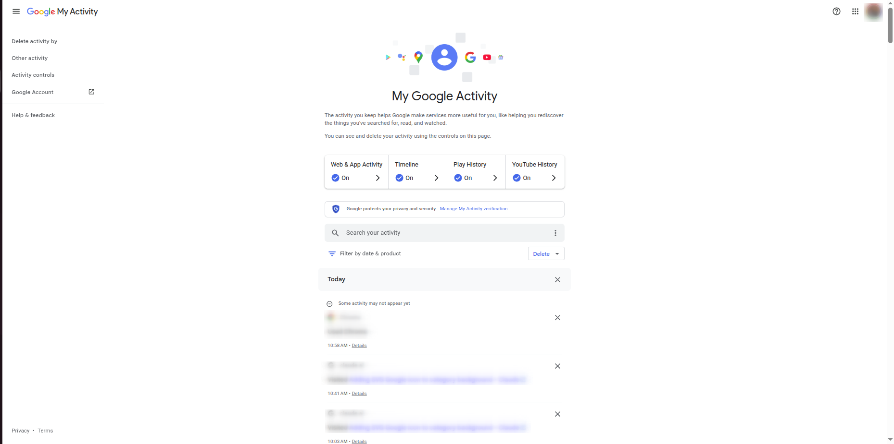
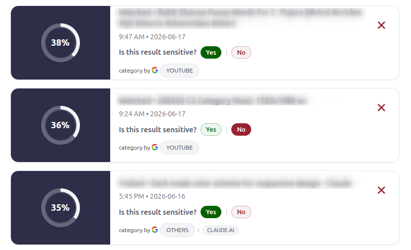

We are a team of researchers from IIT Kharagpur, India, and MPI-SP, Germany, working towards the goal of
supporting users to better manage privacy of their online activity data.
Companies can collect a lot of personal and sensitive information about users (like yourself) from their online
activity, often unknown to the user. However, using data dashboards, it is possible to see and understand what
companies know about you.
To better facilitate this understanding, we built ADA: a personalised data dashboard. ADA learns your own notion
of sensitivity and supports you in visualising the collected data, helping you audit your online activity and
taking control of your privacy. To preserve your privacy, ADA works locally, i.e., your data never leaves your
browser.
Welcome to ADA: Adaptive data DAshboard
Haven't started creating your personalised data dashboard yet?
How ADA works ?
1
Keep your Google Activity Dashboard open
Keep your Google Activity Dashboard open in another tab. Press the above
button "Start creating your personalised data dashboard"
to create a local dashboard

We never see your dashboard data: Absolute
privacy
3
Provide feedback: Review ADA
If you feel the sensitivity scores of the content can be improved in the dashboard — you can convey your feedback and ADA will adapt/personalise in real
time

ADA listens to your feedback and customises itself
automatically for you
2
Review the dashboard
ADA gathers your data (in ~40–80 seconds) and presents it in a personalised dashboard where more privacy-sensitive content
comes at top for easy auditing
4
Explore more privacy controls in ADA
After auditing, you can also delete
any data directly using ADA. Play around to know much more
Use ADA — get back control of your data through our dashboard